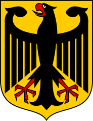

Отто Эдуард Леопольд фон Бисмарк является наиболее важным немецким государственным и политическим деятелем 19-го века. Его служба оказала немаловажное влияние на ход европейской истории. Он считается основателем Германской империи. В течение почти трех десятилетий он формировал Германию: с 1862 по 1873 год в качестве премьер-министра Пруссии, а с 1871 по 1890 год в качестве первого канцлера Германии.
Мои увелечения